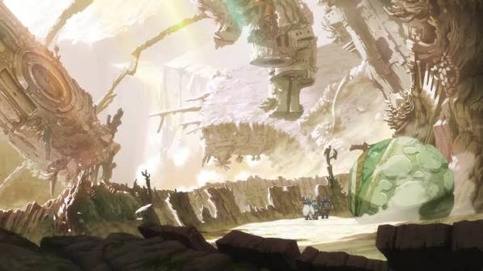

¿Que exactamente es el Abismo?
El Abismo es un agujero de dimensiones titánicas que fue descubierto hace 1900 años en las islas al sur del océano de Beolusk. El agujero tiene alrededor de 1 kilómetro de diámetro y más de 20 kilómetros de profundidad (con sus dimensiones exactas siendo aún desconocidas).
Historia
No se conoce el origen del colosal agujero. Según las exploraciones, una civilización sumamente avanzada prosperó en sus entrañas en una época distante y dejó a su paso muchos tesoros y reliquias de sumo valor en toda su extensión. Dichas reliquias reciben una alta demanda en el exterior, y por ello muchos excavadores se dedicaron a explorar sus más recónditos espacios para encontrar los preciados tesoros y hombres sedientos de información sobre aquel misterioso agujero. A través de estos comercios, en el borde del Abismo creció la actual Orth como un puerto para comerciar las reliquias. El Abismo es completamente diferente al mundo que hay en la superficie: posee ecosistemas únicos, reglas físicas propias de cada capa y el infame campo de fuerza que son capaces de atentar contra la vida de los excavadores. En la primera capa se pueden encontrar enterrados esqueletos en posición de rezo.
